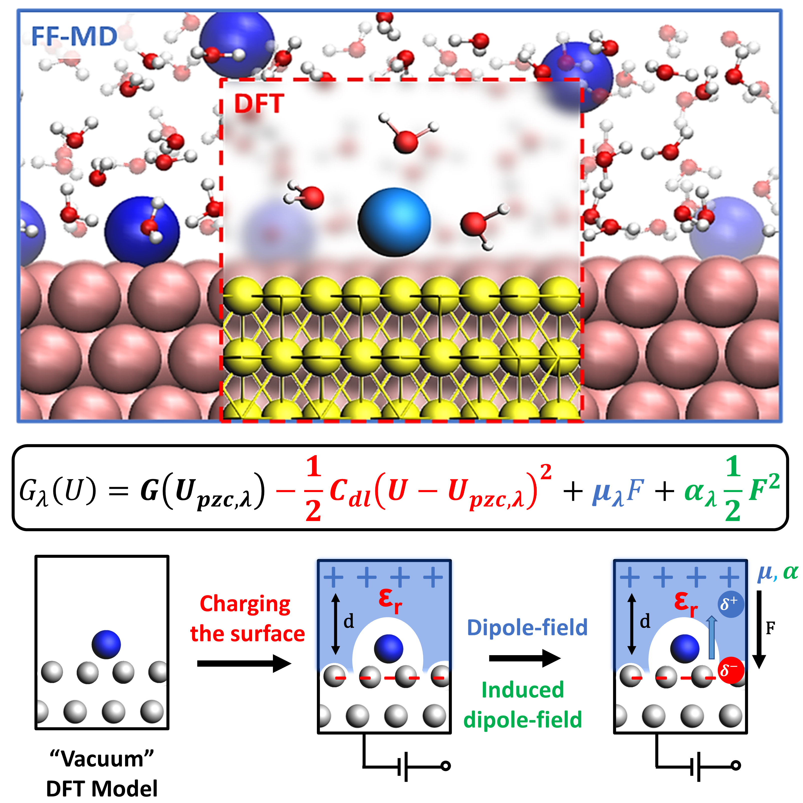
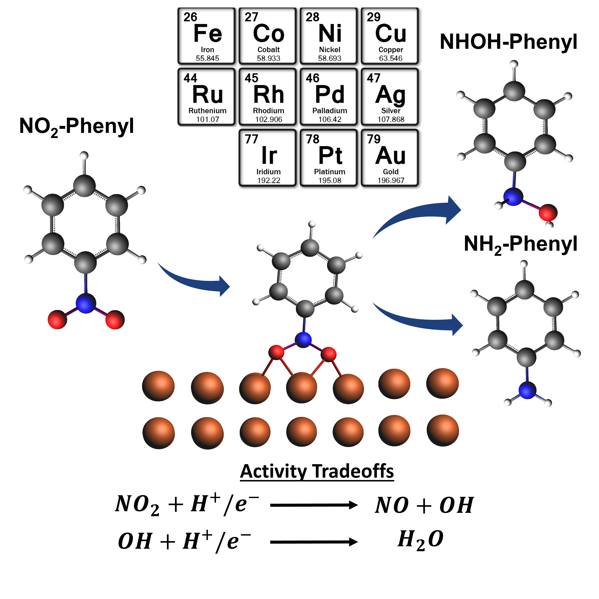
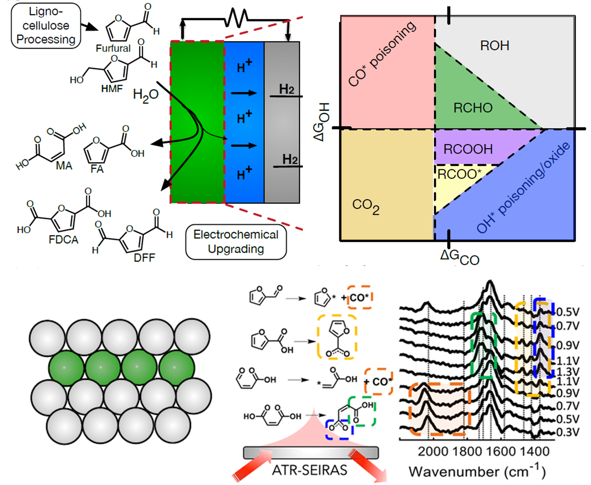
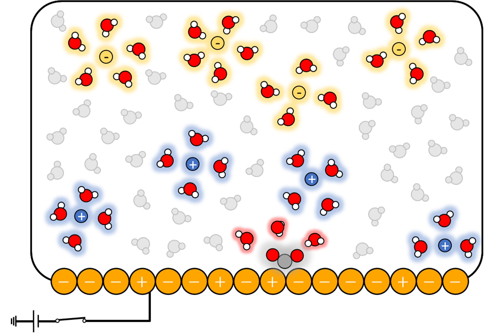
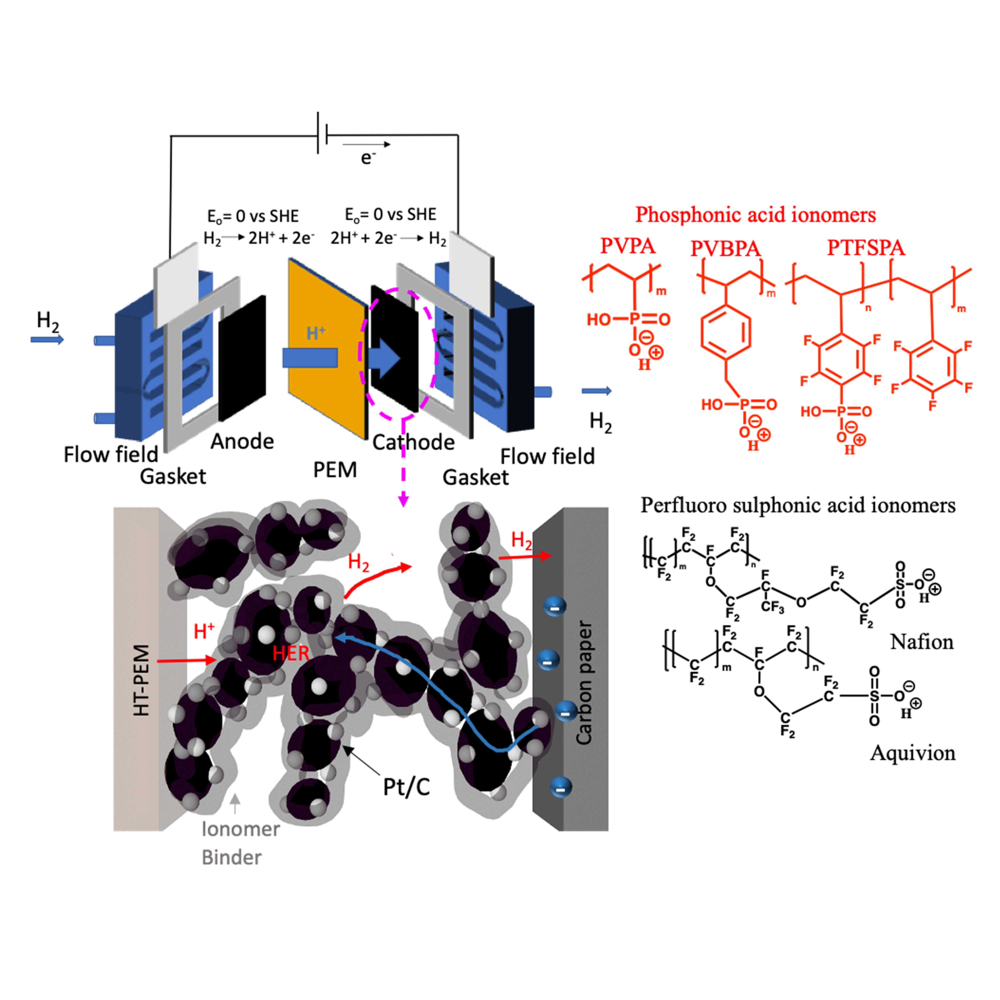

Computational methods in collaboration with experimentalist has the potential to accelerate the exploration of the design space for active, selective, and stable electrocatalysts used for sustainable synthesis of fuels and chemicals.
However, developing computational models of the electrode-electrolyte interface are challenging due to the large length and time scales needed to sample the electrolyte ions, solvent molecules, and adsorbates under different voltages.
This poses an intrisic challenge of developing models that are 1) accurate in capturing these complexities at such large scales and 2) computationally efficient.
In collaboration with Prof. Scott Milner at Penn State, we have developed a multi-scale Density Functional Theory (DFT) and Classical Molecular Dynamics (FF-MD) model to model electrocatalysis.
The local reaction path and specific atomic interactions are captured using DFT.
FF-MD methods provide an explicit and dynamic model of the electrode-electrolyte interface that efficiently captures the electrostatic interactions.
This approach allows for adequate sampling of large length and time scales while modeling electrocatalysis and electrochemical double layers (EDL).
We also have developed an computationally efficient analytic Helmholtz model for the purpose to quantify both 1) the role of electrification within the interface and 2) model uncertainity based on parameters used to approximate the EDL.
Both the analytic model and the multi-scale DFT model are powerful tools to rationally model electrocatalytic systems.
Currently, three manuscripts (two of which are first authors) regarding the analytic model, the use of DFT/FF-MD for modeling cation adsorption, and a perspective paper are in preparation.
Determining the Electrocatalytic Reduction Mechanisms of Nitroaromatics across Late Transition Metal Surfaces

Electrochemical reduction of nitroaromatics are important in the application of chemical synthesis, enviromental remediation, and national security.
The reaction mechanism of electrochemical reduction of both TNT and nitrobenzene was unknown across late transition metal based electrocatalysts.
I have published two first author publications deducing the role of monometallic, bimetallic, and partially reduced Fe oxide surfaces as potenital electrocatalysts for both TNT and nitrobenzene electrochemical reduction.
We also uniquly discuss the competitive role of the outer-sphere mechanism with the electrocatalytic mechanism for TNT reduction.
My work provides fundamental basis for the design of electrocatalysts for the electrochemical reduction of nitroaromatics.
More details of the electrocatalytic mechanistic studies of TNT and nitrobenzene can be found in my first author publications in Green Chemistry and Chem Catalysis.
I have an additional manuscript in preparation of my work on the role of Fe metal organic framework as a potenital nitrobenzene reduction electrocatalyst.
Design Strategies for Selective and Active Electro-Oxidation Catalysts for Biomass Upgrading

Electro-valorization of multi-carbon organic molecules, such as Furfural, is a potenital sustainable technology in upgrading biomass feedstocks into fuels and fine chemicals.
However, oxidation of these multi-carbon organics undergoes complex reaction mechanism, resulting in challenges in achieving specific partial oxidation of certain aldehydes and acids.
We are currently collaborating with experimental team led by Prof. Adam Holewinski to determine fundamental design principles of electrocatalyst that are selective during biomass electro-oxidation.
We currently have used DFT methods to determine descriptors across bimetallics for electro-oxidation of Furfural and decipher key vibrational frequencies from experimental ATR-SEIRAS spectras.
A manuscript regarding the ATR-SEIRAS work is in preparation.
I am on a similar project as a CCMS intern at Lawrence Livermore Livermore National Laboratory with Dr. Sneha Akhade and Dr. Christopher Hahn to determine the roles of Ni oxides as potenital HMF electro-oxidation catalysts.
We are exploring the role between catalyst-support interactions and overall selectivity/activity towards OER and HMF electro-oxidation. A manuscript is in preparation regarding this work.
Investigating Cation and Surface Facet Effects during Electrochemical Reduction of CO2

Electrochemical reduction of CO2 is a promising technology to sustainable synthesize fuels and chemicals.
It is well known that altering the identity of the cations has significant effects on the selectivity and rates of CO2 electrochemical reduction.
However, the fundamental origin of these cation effects is still unknown and hotly debated.
Additionally, the identity of the surface facet can also have pronounced effects on kinetics and selectivity of CO2 reduction.
In collaboration with experimentalist Prof. Anne Co at Ohio State University, we are investigating these cation and surface facet effects using DFT and Classical MD methods.
Across different cations and surface facets of Au, DFT methods are used to investigate rate-limiting steps along the local reaction path while Classical MD can study how the EDL restructures
during electrocatalysis.
We compare this with will well-defined single crystal experimental CV and EIS results to elucidate the origin of these cation and surface facet effects.
A current manuscript of this work is in preparation.
Probing Anion Adsorption during HER and HOR within Electrochemical Hydrogen Pumps

Fuel cells and electrochemical hydrogen pumps (EHP) have shown significant performance improvement with the use of phosphonic acid ionomer electrode binders and ion-pair high temperature polymer electrolyte membranes.
The effects of electrode kinetics due to varying compositions of phosphonic and perfluorosulfonic acid ionomers is unknown.
We are collaborating with Prof. Chris Arges at Penn State University to deconvulate the role of these ionomers on electrode kinetics.
We combined 1st principles DFT calculations and experimental charge transfer resistances to elucidate the role of these ionomers during HER/HOR on the Pt catalysts.
DFT predicted adsorption affinity of various phosphonic and sulfonic ionomers on Pt correlate well with charge transfer resistances.
The adsorption affinity of these ionomers can be tuned by varying the functional group, resulting in difference in proton affinities of the ionomer.
This work is currently in submission at Advanced Energy Materials. More details of this work can be read at ChemRxiv.